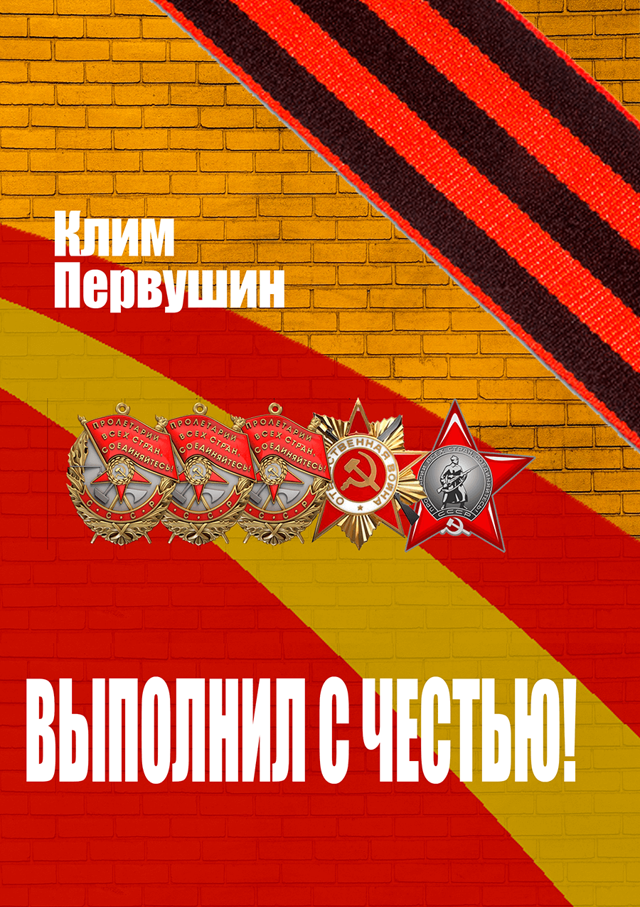

Книга - Восхождение к подвигу

Дорогие братья и сестры! Обращаемся ко всем не равнодушным к истории родной страны и героям её защищавшим. Проводится сбор средств на публикацию книги с жизнеописанием Самойленко Трофима Львовича. Просим вас оказать посильную помощь в публикации книги.